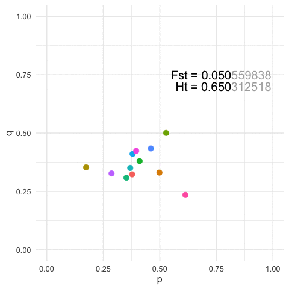
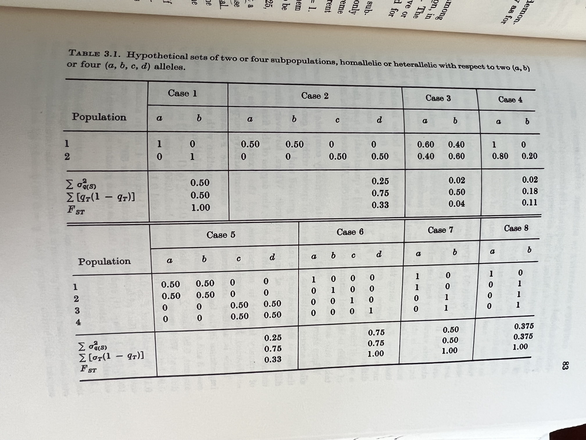

The mapping of genotypes -> estimates of both within locale diversity and among local structure are a fundamental component of population and landscape genetic analyses, and indeed the formulation for our understanding of how evolution proceeds.
A common method for measuring structure is from Sewell Wright ’s \(F_{st}\) statistic and its offspring. At heart, the parameters is defined as the fraction of the total genetic variance that can be contributed to individuals being in different populations. This parameter has many offspring but in its most general form, it can be defined as the ratio of the among locale variance in allele frequencies standardized by the variance in the global allele frequencies. For a single locus, this becomes.
\[ F_{ST} = \frac{\sum_{i=1}^\ell \sigma_{q_{S(i)}}^2}{\sum_{i=1}^\ell \left[ q_{T(i)} (1 - q_{T(i)}) \right]} \]
Originally, Wright suggested that this should probably not be thought of in the way that most of us see ‘differentiation’. Namely,
The fixation index [Fst] is thus not a measure of the degree of differentiation in the sense implied in the extreme case by the absence of any common allele. It measures differentiation within the total array in the sense of the extent to which the process of fixation has gone toward completion.1
To demonstrate this, he showed the following examples. Of note, compare cases 1, 6, 7, & 8 in the following table, all of which have the same value for Fst but have different allele spectra (in particular, see 7 & 8, which have subsets of populations that have Fst = 0!

To view this in a more broad context, we can easily show that for any particular value of Fst, we can define a similarly large number of population configurations that results in both the same amount of overall genetic structure (\(F_{st}\)) and the same amount of within strata diversity (\(H_t\)).
There are two examples that highlight some of the challenges for this.
It is possible to fix the allele frequencies and shuffle the labels. For example, the identity of the specific locale relative to the inherent allele frequencies is not unique. Consider the case where Population A has
p=0.3at a locus and Population B hasp=0.7After some perturbation in the system or iterating across generations, we may have the situation where Population A hasp = 0.7and Population B hasp = 0.3. Measuring structure or diversity within and among these pairs of pops will yield identical values even though the relative positions of each population has been swapped in allele space.More generally, for any given value of diversity and structure, we can find an infinite set of populations that can yield the same estimates. The featured image on this page is an example with
K=12populations for a single 3-allele locus. The plots are of the first two allele frequencies and the estimates of both diversity and differentiation are the same to the first 3 decimal points (n.b., we can be more stringent but I think this makes the point close enough).
In both of these situations, the relative position and arrangements of the individual populations are not unique. Now, this may not be an issue, if the kinds of questions you are working with do not rely upon interpreting the relative positions of populations in allele space. However, for many population, conservation, and landscape type studies, it is exactly the relative positions of populations that are the focus of the study. As such, to ignore the irreversibility of structure and diversity statistics is to pass up on potentially valuable insights on the species and systems you are working with.
Footnotes
Wright, S. 1978. Evolution & the Genetics of Populations 4: Variability within and among natural populations. University of Chicago Press. .↩︎